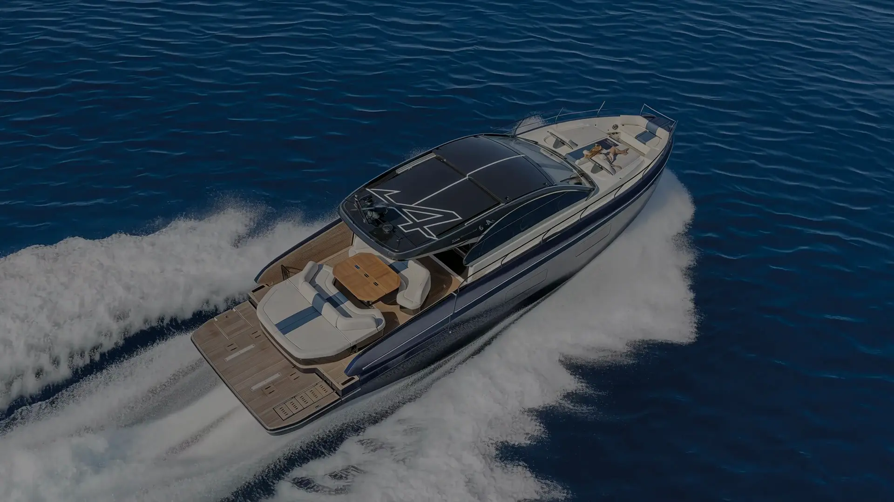
Gran Turismo 50Fortune favors the bold.
Turn herthrough 360°.
Drag to turn the yacht. Tap a point to look closer, or Step inside.
Make her yours
Hull
White
Cockpit upholstery
Linetex Chalk, as standard
Teak
Natural
White hull, Linetex Chalk cockpit, Natural teak.
White and Abysse blue are BENETEAU hull colours for the Gran Turismo 50, and Linetex Chalk upholstery is standard. Alpine Vision blue, metallic hull paint and Crevin Strada 07 upholstery are also offered. The 3D yacht is a concept model built from official views, shown plain on purpose. Your dealer confirms the colours and options available.
Stepaboard.
What is theGran Turismo 50?
The Gran Turismo 50 is BENETEAU's 15.95 m flagship express cruiser: a secure, free-flowing deck underway that turns into villa-like living space once moored.
Exterior and interior by Andreani Design, naval architecture by Dixon Yacht Design. From 983,600 € excl. VAT.
The design philosophy of the Gran Turismo 50: Kanso and Yugen
Kanso
simplicity
Yugen
gracefulness
From the graceful hull lines to the ambient light in the cabins, every detail is drawn to evoke balance, clarity and calm.
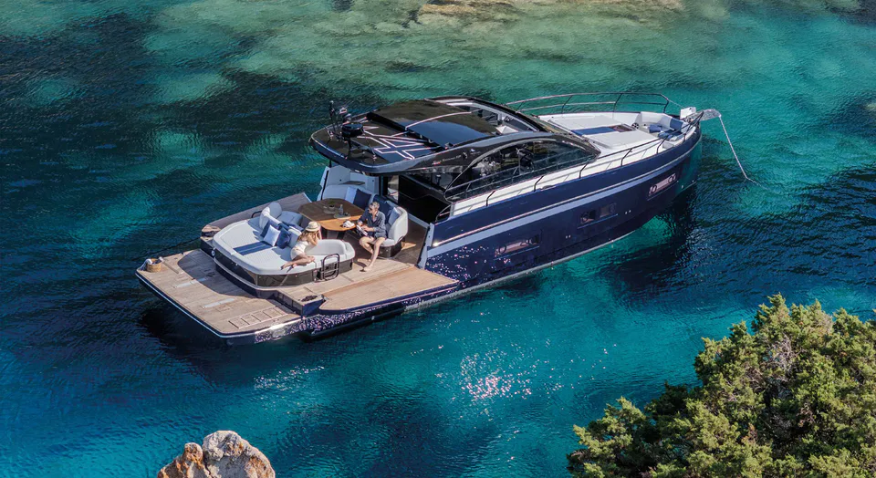
A villa, once moored.
Relaxation areas linked by a free-flowing main deck, a three-season helm station and a swim platform close to the water.
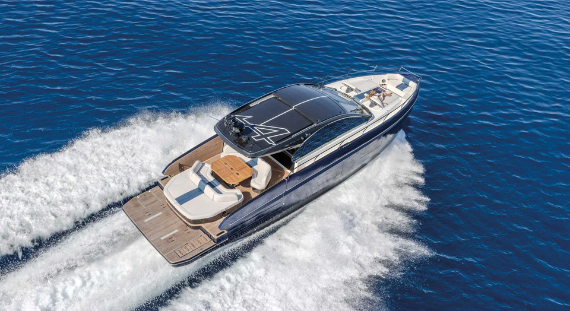
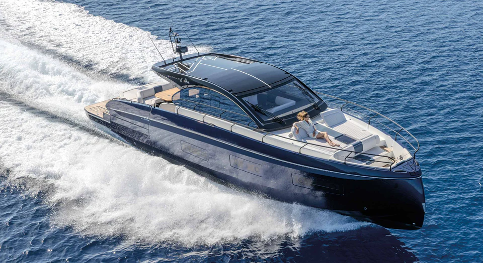
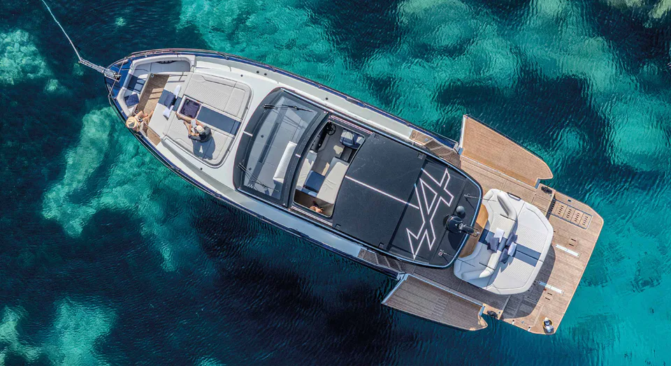

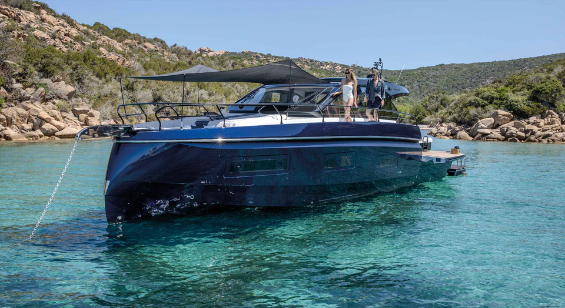

How far doesshe go?
Up to 250 nautical miles at 22 knots, provisional figures from BENETEAU, with Volvo joystick control, an eco-drive system and a choice of open or protected helm.
Standardor Alpine?
With Alpine, the French sports car brand, BENETEAU offers limited editions with engine upgrades, coloured hulls and their own accents.
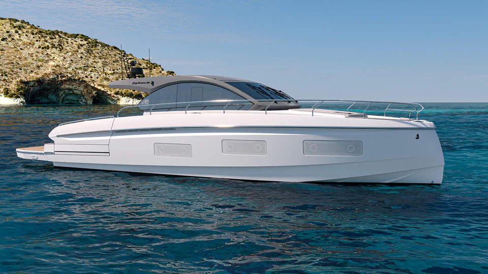
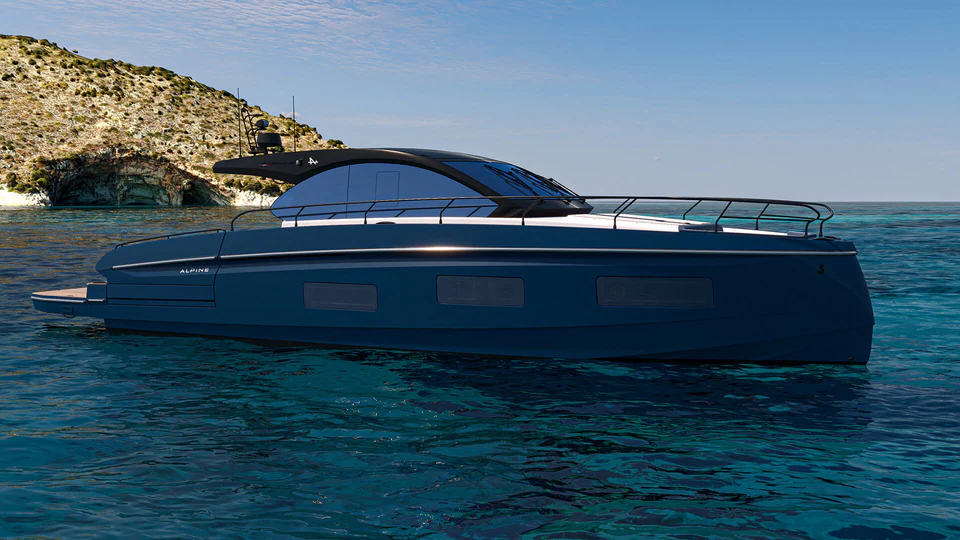
StandardAlpineWhich layoutsuits you?
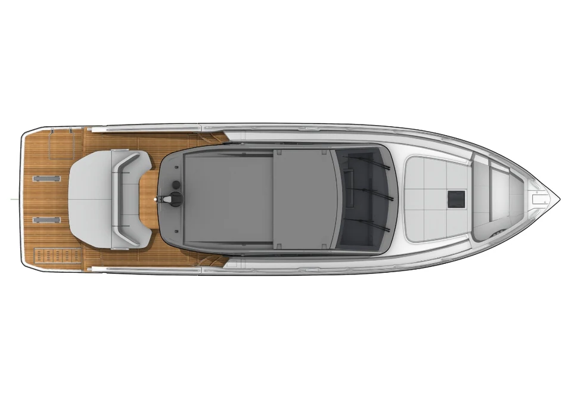
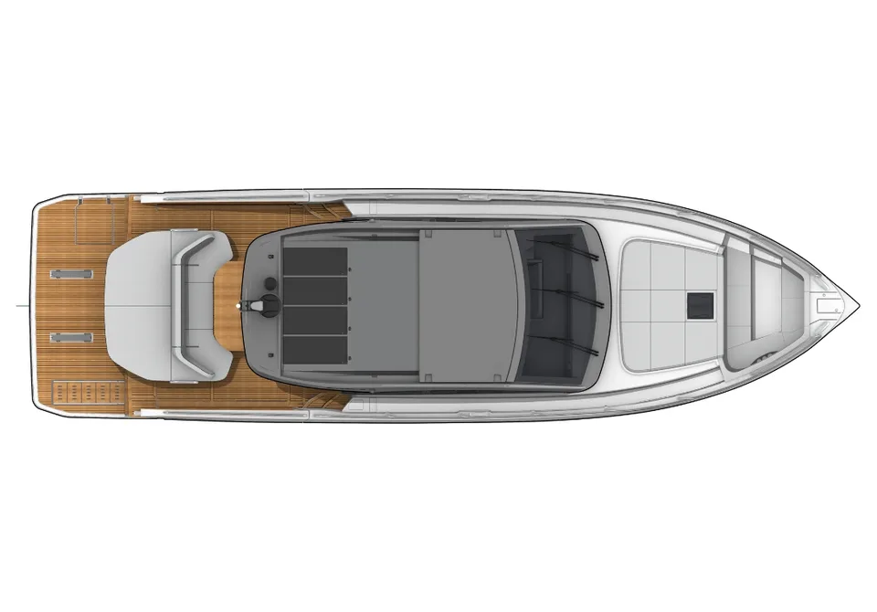
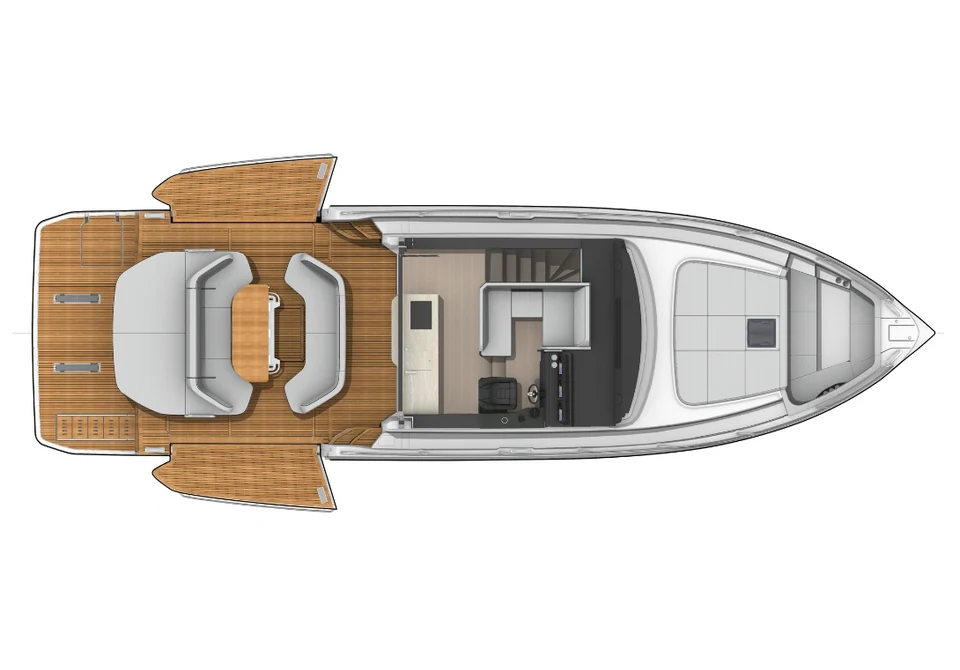
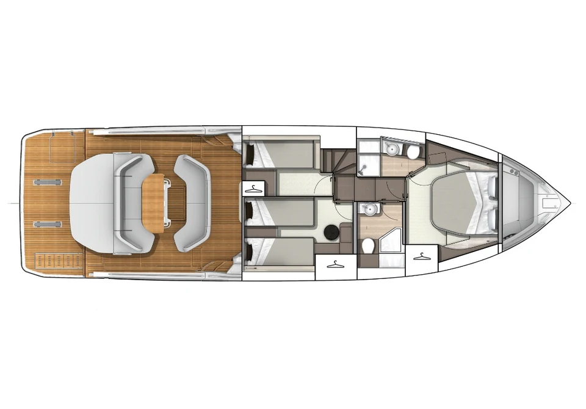
How big isthe Gran Turismo 50?
Feel herat sea.
From 983,600 €
Excluding VAT. Your dealer confirms the price and options for your country.
The rest ofthe Gran Turismo range.

The collection